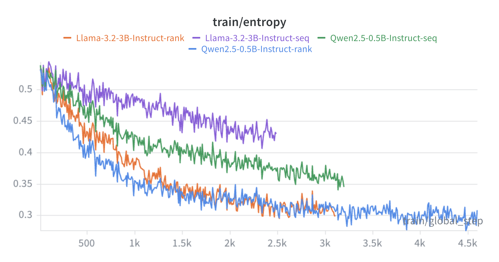

Rank-GRPO (Zhu et al., 2025) trains an LLM recommender with RL using a rank-level reward decomposition (per-position DCG advantage) instead of a single sequence-level scalar advantage. Sequence-level dilutes the gradient uniformly so tail ranks stay weak; rank-level assigns position-specific credit and lifts the whole list. We reproduce the core ablation: both arms share the same SFT start, reward (exp_inf), seed and hyper-parameters, differing only in --advantage_level {rank, sequence}. Evaluation is offline on the held-out test split.
Position discount and listwise quality:
$$\mathrm{DCG@K}=\sum_{t=1}^{K}\frac{rel_t}{\log_2(t+1)},\qquad \mathrm{NDCG@K}=\frac{\mathrm{DCG@K}}{\mathrm{IDCG@K}},\qquad r_t=\frac{rel_t}{\log_2(t+1)}\Big/\mathrm{IDCG}.$$
Rank-level (ours): each rank gets its own normalized advantage —
$$A_t=\frac{r_t-\mu}{\sigma},\qquad \mathcal{L}=-\sum_t A_t\,\log\pi(a_t).$$
Sequence-level (baseline): one scalar advantage shared across all ranks —
$$R=\sum_t r_t,\qquad A=\frac{R-\mu}{\sigma},\qquad \mathcal{L}=-A\sum_t \log\pi(a_t).$$
Rank-level = position-specific credit; sequence-level shares one scalar, so tail ranks are under-credited.
Rank wins on all 8 ranking metrics; the gap widens from Recall@5 to Recall@20.

Rank-level — and the smaller model (Qwen-0.5B) — settle at lower, more stable entropy, i.e. a sharper, more consistent policy.
BibTeX
@inproceedings{zhu2025rankgrpo,
title={Rank-GRPO: Training LLM-based Conversational Recommender Systems with Reinforcement Learning},
author={Zhu, Yaochen and Steck, Harald and Liang, Dawen and He, Yinhan and Ostuni, Vito and Li, Jundong and Kallus, Nathan},
booktitle={arXiv:2510.20150}, year={2025}}